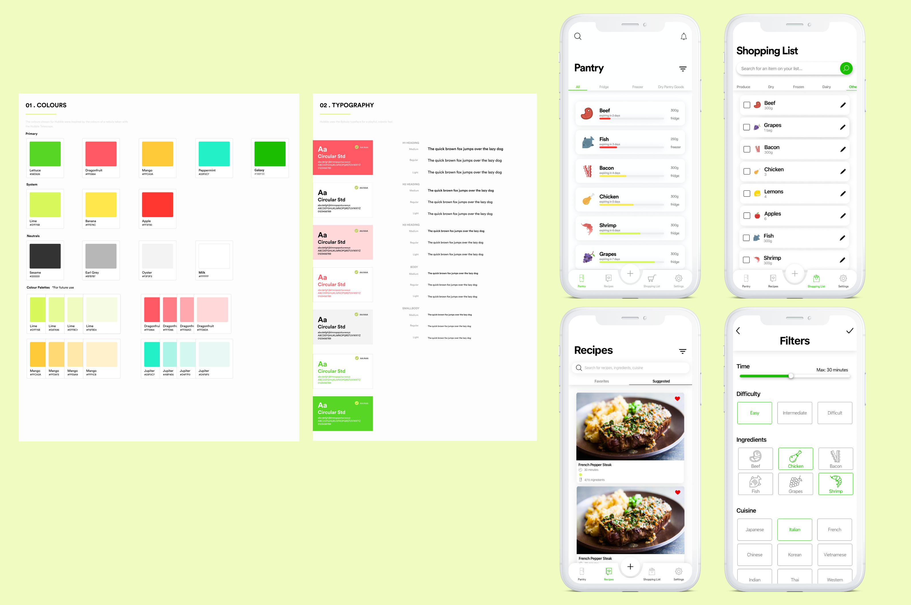

Keepfresh
How might users keep track of and use their food before it expires?

Project details
Product: iOS app
Team: Connor Fong, Alan Yang, Wren Liang, Noor Khan, Nanda Syahrasyad, Andrew Zulaybar, Sang
Le, Sandy Co, Jessica del Rosario
Role: UX/UI Designer
Tools: Sketch, InVision, Figma
Timeline: 4 months (MVP), 8 months (final product)
Background
Keepfresh is an iOS app built with UBC Launch Pad, a student-run software engineering team devoted to building software projects in a collaborative, professional environment. I collaborated with a team of 7 developers, a strategist, and another UX/UI designer on this project. As a UX/UI designer, I conducted user research, created wireframes/prototypes, and effectively communicated with my cross-functional team while iterating upon their feedback.
Project goal
Build, design, and conduct research for an iOS app that will allow users to track the food in their homes, see when items are expiring, and find recipes based on their inventory.
General process

- Empathize: User interviews/surveys, seeking to understand
- Define: Pain points, prototyping personas, role objectives, challenges
- Ideate: Share/diverge/converge ideas, determine MVP
- Prototype: Mockups, simple storyboards, failing fast and iterating quickly
- Test: Understand problems, 'What works? What doesn't work?, iterate
Research process
Low-fidelity research
We surveyed and interviewed a wide variety of students and working adults (Surveyed - 78 people, Interviewed - 20 people) to gain a deeper understanding of the main problems that people were having when trying to keep track of and use their food before it expired - this helped us to develop our main user flows and figure out what functions would be most important.
Mid-fidelity research
In order to validate our user flows and mid-fi designs, we created scenario tasks then asked people to do a think-aloud process, and conducted A/B testing. This helped us isolate any parts of the user flows that might be confusing, and decide on which iterations of certain interfaces to continue to improve on.
The problem
From our research, we narrowed down the 3 main problems that people seemed to have with food management:
- Forgetting: People tend to forget what they have/don't have, which can result in buying too much of something, or allowing something to go expired without noticing.
- Cooking Time and Experience: Many people have a limited amount of cooking time and knowledge - this can cause difficulties in finding recipes that are quick and easy enough, but still tasty.
- Finishing their food: Many individuals, especially those who live alone, have a hard time finishing all of their food off before it expires, or finding dishes to make that use up all their ingredients.
Solving the problem
We created 3 main solutions (which later led to our low-fi designs and user flows) to attempt to solve these 3 main problems:
- Pantry page: The 'pantry' or 'fridge' page allows users to see all of the food that they currently have, with notifications of expiry as well as the items listed in order of nearest to furthest expiration. Users will be able to add items manually or scan their grocery shopping receipt barcode to add all of those items automatically.
- Recipes page: Users will be able to find recipes based one what they have in their fridge (or any recipes in general), along with filters for cooking time, difficulty level and more.
- Shopping list: Users will be able to add recipe items that they are missing directly from the recipe page to their shopping list (or manually), and as soon as these items are checked off the list, they will be added to the pantry.
Keepfresh user flow demo:
Target users
For our minimum viable product (MVP), our main target users were individuals living on their own or not sharing food with roommates/family members, so that we could effectively solve the problems that this demographic was having in terms of food management, and further expand on these solutions with time. In the future, we would like this product to also help families and those who share their food with others to keep track of their food, so that multiple users can add and remove items from the same fridge.
Low-fidelity wireframe sketches
After synthesizing the data from our user surveys and research, we narrowed down which features may be most useful and sketched out different iterations of wireframes for our MVP.

Mid-fidelity designs
After completing more user tests and validating our lofi wireframes, we were able to design multiple versions of midfi wireframes, which we also then tested to narrow down the most intuitive iterations.

UI library + High-fidelity designs
We were able to create a UI library featuring the main colour scheme and font we will be using. We are also currently in the process of converting our midfi designs to hifi, and are conducting some user tests in between this conversion in order to validate our designs.

Challenges
As a designer, I faced the challenge of ensuring that the the interfaces I created were feasible for our development team, while still making it clean and intuitive. Given our time constraints, certain elements that we designed, like the receipt barcode scanning function, were not able to be fully completed.
Moving on from this, I learned to always be communicating with my developer team throughout the design process, taking into account both their feedback on the designs, and input in terms of feasibility. This has helped me allocate my time as a designer to optimizing the product for both our users and developers, while also better understanding how the product itself works.
Next steps
- Further testing of prototypes to validate/further improve upon high-fidelity interfaces and interactions.
- Ensuring all functions are properly implemented (e.g. scanning receipt barcode, order of pantry items listed from closest to furthest expiry).
- Designing individual profiles and settings so multiple users can share a fridge by creating groups.